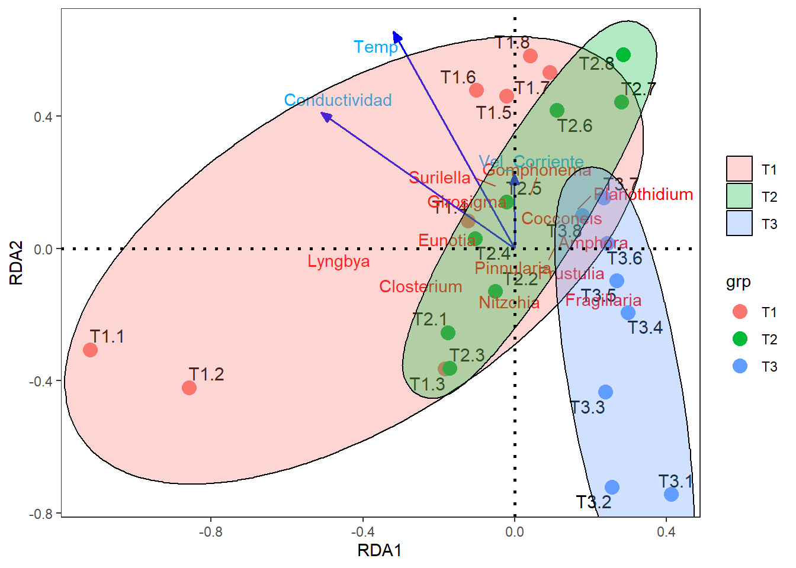
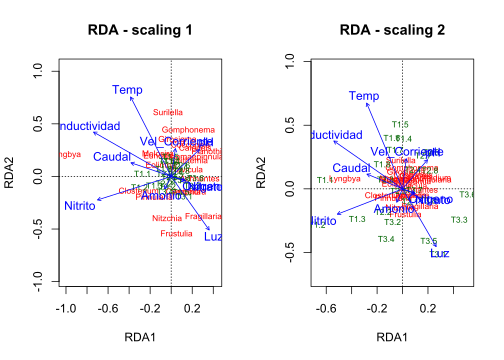
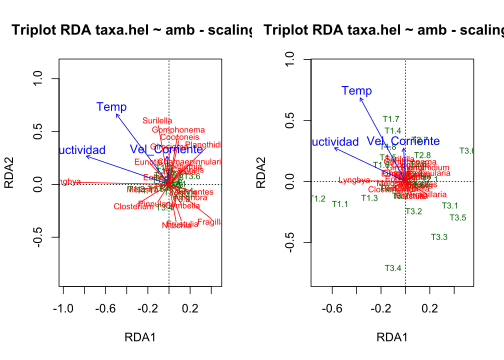
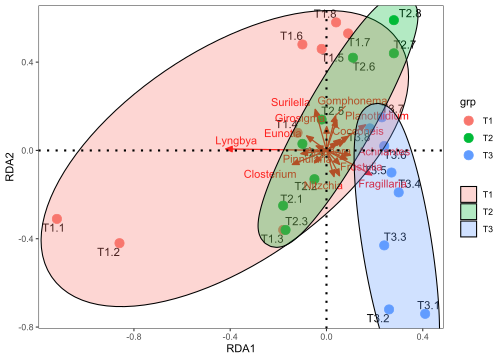
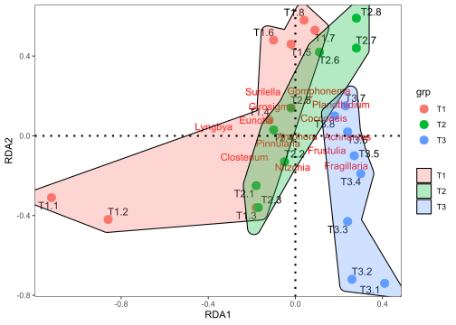
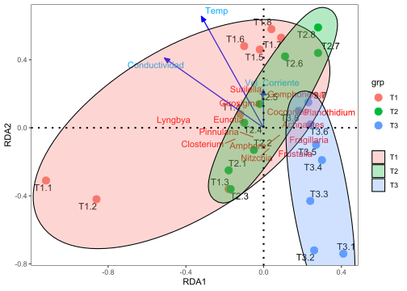

# Librerías requeridas
library(ade4)
library(adegraphics)
library(adespatial)
library(cocorresp)
library(vegan)
library(MASS)
library(ellipse)
library(FactoMineR)
library(rrcov)
library(ggplot2)
library(reshape2)
library(ggrepel)
library(ggforce)
library(kableExtra)
Taller 7. Análisis de Redundancia - RDA
Objetivo de la actividad:
La siguiente base de datos es tomada del trabajo de (Osorio, 2021), relacionado a un estudio sobre la composición de microalgas de la ciénaga Sevillano en el complejo lagunar de la Ciénaga Grande de Santa Marta (Colombia). La información contiene a 21 géneros de microalgas (matriz Y) y 10 variables ambientales (matriz X) medidas en 24 observaciones (localidades y campañas de muestreo). El propósito del ejercicio consiste en determinar la relación entre la composición de las microalgas y las variables fisicoquímicas de su ambiente, aplicando un análisis de redundancia (RDA) y un Análisis de Correspondencia Canónica (ACC), para finalmente comparar la aplicación de cada técnica. Se utilizará el siguiente archivo: Microalgas.csv
Ejercicio tomado de: Rodríguez-Barrios (2023) Enlace del libro
Enlace de los archivos del libro Revisar el capitulo de Análisis de Redundancia - RDA
Numerical Ecology With R - Borcard et al. 2018 Capítulo de Análisis de Redundancia - RDA
Procedimiento resumido de la ordenación con el RDA
Cargar librerías y funciones requeridas
Cargar la base
Microalgas.csvRealizar los ajustes a las variables y factores
Correr el RDA con todas las variables
Correr el RDA con las variables ambientales seleccionadas
Figuras de BIPLOT y TRIPLOT con librerías
"vegan"y"ggplot2".
Cargar las librerías requeridas
Funciones adicionales (Bordcard et al. 2018)
# Funciones a cargar
source("hcoplot.R")
source("triplot.rda.R")
source("plot.lda.R")
source("polyvars.R")
source("screestick.R")
Cargar o importar la base de datos
Esta base de datos cuenta con una variable agrupadora o factor (Tributario), 10 variables ambientales y 21 taxones de microalgas.
# Base de datos
datos = read.csv2("Microalgas.csv",row.names=1)
Ajuste de las bases de datos biológica (tax.hel) y Ambiental (amb)
A continuación se realizará un ajuste de la base de datos, primero convirtiendo a la columna Tributario como un factor, luego transformando a las variables ambientales amb con logaritmo en base 10 y finalmente ajustando a los taxones tax.hel con la transformación de Hellinger. Las abreviaturas en las filas T1.1, ..., T1.6, ... Representan el número del tributario (T1) y el numero de la visita realizada al lugar de muestreo (1).
# Ajuste de factores
datos$Tributario = as.factor (datos$Tributario)
# str(datos) # Nueva estructura de la base de datos
# Variables ambientales
amb = datos[,c(2:11)]
# Edición de la tabla para su impresión
round(head(amb),2) %>%
kbl(caption = "", booktabs = F,longtable = T) %>%
kable_classic(full_width = F, html_font = "Cambria")| Amonio | Nitrito | Nitrato | Oxigeno | pH | Conductividad | Caudal | Vel_Corriente | Luz | Temp | |
|---|---|---|---|---|---|---|---|---|---|---|
| T1.1 | 0.30 | 0.84 | 0.90 | 7.68 | 8.10 | 76 | 0.51 | 0.73 | 800 | 17.6 |
| T1.2 | 0.30 | 0.78 | 0.83 | 6.54 | 7.45 | 76 | 1.59 | 0.37 | 400 | 18.3 |
| T1.3 | 1.11 | 1.18 | 3.43 | 5.62 | 7.81 | 76 | 1.48 | 1.15 | 300 | 17.1 |
| T1.4 | 1.02 | 0.88 | 2.67 | 6.08 | 9.21 | 76 | 1.24 | 1.33 | 100 | 18.6 |
| T1.5 | 0.19 | 0.15 | 0.52 | 5.10 | 9.24 | 76 | 1.32 | 1.32 | 800 | 17.9 |
| T1.6 | 0.21 | 0.47 | 0.90 | 5.60 | 9.63 | 77 | 1.25 | 1.29 | 200 | 17.8 |
Los datos de abundancia de los taxones están en cifras decimales, debido a la transformación logarítmica que se les aplicó.
# Variables biológicas linealizadas - Taxones con Hellinger
tax.hel=decostand(datos[,c(12:32)],"hellinger")
# Edición de la tabla para su impresión
round(head(tax.hel),2) %>%
kbl(caption = "", booktabs = F,longtable = T) %>%
kable_classic(full_width = F, html_font = "Cambria")| Fragillaria | Lyngbya | Chamaepinnularia | Achnantes | Amphora | Caloneis | Closterium | Cocconeis | Cymbella | Eolimna | Epithemia | Eunotia | Frustulia | Girosigma | Gomphonema | Melosira | Navicula | Nitzchia | Planothidium | Surilella | Pinnularia | |
|---|---|---|---|---|---|---|---|---|---|---|---|---|---|---|---|---|---|---|---|---|---|
| T1.1 | 0.00 | 0.62 | 0.10 | 0.00 | 0.15 | 0.00 | 0.23 | 0.22 | 0 | 0.27 | 0.00 | 0.00 | 0.00 | 0.00 | 0.00 | 0.51 | 0.00 | 0.24 | 0.15 | 0.10 | 0.25 |
| T1.2 | 0.10 | 0.49 | 0.07 | 0.00 | 0.12 | 0.00 | 0.22 | 0.30 | 0 | 0.33 | 0.00 | 0.17 | 0.17 | 0.00 | 0.00 | 0.49 | 0.20 | 0.29 | 0.17 | 0.00 | 0.19 |
| T1.3 | 0.34 | 0.16 | 0.20 | 0.00 | 0.00 | 0.00 | 0.18 | 0.33 | 0 | 0.32 | 0.00 | 0.09 | 0.11 | 0.00 | 0.09 | 0.50 | 0.11 | 0.37 | 0.32 | 0.00 | 0.22 |
| T1.4 | 0.31 | 0.21 | 0.23 | 0.05 | 0.07 | 0.14 | 0.11 | 0.29 | 0 | 0.26 | 0.05 | 0.00 | 0.00 | 0.15 | 0.18 | 0.49 | 0.20 | 0.33 | 0.33 | 0.12 | 0.20 |
| T1.5 | 0.28 | 0.14 | 0.22 | 0.08 | 0.10 | 0.12 | 0.09 | 0.44 | 0 | 0.29 | 0.07 | 0.10 | 0.00 | 0.16 | 0.20 | 0.43 | 0.20 | 0.25 | 0.35 | 0.19 | 0.12 |
| T1.6 | 0.25 | 0.18 | 0.19 | 0.09 | 0.11 | 0.19 | 0.06 | 0.44 | 0 | 0.28 | 0.08 | 0.09 | 0.00 | 0.13 | 0.19 | 0.49 | 0.20 | 0.21 | 0.31 | 0.19 | 0.09 |
Doce pasos para el análisis de redundancia - RDA.
Paso 1. Ordenación de los taxones y las variables ambientales.
En el siguiente analisis se relaciona a la matriz de datos biológicos (abundancia de taxones) con la matriz de datos ambientales. A continuación se determinan los insumos generales del análisis.
# 1. Realización del RDA
tax.rda<-rda(tax.hel ~.,amb)
# tax.rda # Resultados resumidosMatriz 1. Partición de la varianza. La inercia restringida es la que define el ajuste (restringida) en la relación entre las dos matrices de variables. Para este caso es de 0.54 (54%). Más adelante se aplicará el R2 de Ezequiel (1930), para encontrar el ajuste sin restricción (ajuste final del RDA). A continuación se muestra el comando para presentar los resultados detallados del RDA.
Matriz 2. Importancia de los componentes. Muestra que se requiere de 10 ejes canónidos (RDA) para explicar el 54% de la varianza explicada por la inercia restringida. La inercia restante se explica por los ejes de los 12 componentes principales PC.
Matriz 3. Species scores, muestra las coordenadas de las especies en los ejes canónicos, de los cuales se graficarán los dos primeros.
Matriz 4. Site scores, Muestra las coordenadas de los sitios
Matriz 5. Site constraints, muestra a las coordenadas de los sitos en el espacio de los taxones.
Matriz 6. Biplot scores, muestra las coordenadas de las variables ambientales.
# summary(tax.rda) # Resultados completosA continuación se muestra una manera de extraer algunos insumos por separado del anterior comando summary(tax.rda). Las coordenadas de los taxonesy de los sitios serán tenidas en cuenta más adelante, para las figuras de ggplot2.
# Matriz 3. Escores o coordenadas de los taxones
species.scores <- scores(tax.rda, display = "species")
species.scores <- round(species.scores,3)
# Guardar las coordenadas de los taxones en el directorio de trabajo
# write.csv2(round(species.scores,3), "coord.taxones.csv")
# Edición de la tabla para su impresión
head(species.scores) %>%
kbl(caption = "", booktabs = F,longtable = T) %>%
kable_classic(full_width = F, html_font = "Cambria")?(caption)
# Escores o coordenadas de los sitios
site.scores <- scores(tax.rda, display = "sites")
site.scores <- round(site.scores,2)
# Edición de la tabla para su impresión
head(site.scores) %>%
kbl(caption = "", booktabs = F,longtable = T) %>%
kable_classic(full_width = F, html_font = "Cambria")| RDA1 | RDA2 | |
|---|---|---|
| T1.1 | -1.08 | 0.02 |
| T1.2 | -0.84 | -0.20 |
| T1.3 | -0.22 | -0.29 |
| T1.4 | -0.11 | 0.14 |
| T1.5 | 0.03 | 0.37 |
| T1.6 | -0.02 | 0.44 |
# Escores de las variables restringidas
biplot.scores <- scores(tax.rda, display = "bp")
biplot.scores <- round(biplot.scores,2)
# Edición de la tabla para su impresión
head(biplot.scores) %>%
kbl(caption = "", booktabs = F,longtable = T) %>%
kable_classic(full_width = F, html_font = "Cambria")| RDA1 | RDA2 | |
|---|---|---|
| Amonio | -0.05 | -0.12 |
| Nitrito | -0.59 | -0.23 |
| Nitrato | 0.11 | -0.04 |
| Oxigeno | 0.11 | -0.04 |
| pH | 0.22 | 0.26 |
| Conductividad | -0.62 | 0.43 |
Paso 2. Coeficientes de las variables regresoras (ambientales), en el modelo lineal.
Solo se mostrarán los tres primeros ejes canónicos [,1:3], para facilidad de su interpretación.
round(coef(tax.rda),2)[,1:3] RDA1 RDA2 RDA3
Amonio 0.01 -0.01 0.10
Nitrito -0.18 -0.32 0.18
Nitrato 0.04 0.03 0.01
Oxigeno 0.03 -0.04 -0.11
pH 0.07 0.07 0.04
Conductividad -0.02 0.01 -0.01
Caudal 0.10 -0.28 0.00
Vel_Corriente 0.37 0.21 0.02
Luz 0.00 0.00 0.00
Temp 0.06 0.14 0.01Se puede pensar en un modelo lineal, que tiene en cuenta a los coeficientes descritos en el primer eje canónico:
Distribución de los taxones de microalgas (Matriz Y) = 0.01(Amonio) – 0.18(Nitrito) + … + 0.06(Temp)
Paso 3. R2 sin ajuste vs. R2 ajustado (Ezequiel 1930)
La nueva inercia no sesgada (sin restricción) calculada con la formula de Ezequiel es de 0.19 o del 19%.
# R^2 sin ajuste (inercia restringida)
(R2 <- RsquareAdj(tax.rda)$r.squared)[1] 0.5463953# R^2 ajustado
(R2adj <- RsquareAdj(tax.rda)$adj.r.squared)[1] 0.1974686
Paso 4. Figura de Triplot
A continuación, se realizará la gráfica del RDA (figura Triplot) (Figura 15.1), que relaciona a los tres elementos: taxones, variables ambientales y sitios de muestreo mediante dos tipos de escalamiento (Scalings 1 y 2).
par(mfrow = c(1, 2))
# Scaling 1
plot(tax.rda,scaling=1, display = c("sp", "lc", "cn"), main="RDA - scaling 1")
# Scaling 2
plot(tax.rda, display = c("sp", "lc", "cn"), main="RDA - scaling 2")
par(mfrow = c(1, 1))
Paso 5. Prueba global del RDA
Esta prueba obtiene un valor p = 0.04296 *, por lo cual se valida que el modelo de regresión múltiple de este RDA presenta un ajuste apropiado ( a pesar de la poca inercia encontrada).
# Prueba global del RDA (dos opciones)
# Ho= no hay relación entre las variables X y las Y
anova(tax.rda, permutations = how(nperm = 1000))Permutation test for rda under reduced model
Permutation: free
Number of permutations: 1000
Model: rda(formula = tax.hel ~ Amonio + Nitrito + Nitrato + Oxigeno + pH + Conductividad + Caudal + Vel_Corriente + Luz + Temp, data = amb)
Df Variance F Pr(>F)
Model 10 0.078044 1.5659 0.04995 *
Residual 13 0.064790
---
Signif. codes: 0 '***' 0.001 '**' 0.01 '*' 0.05 '.' 0.1 ' ' 1A continuación se muestra que ninguno de los ejes canónicos prsenta significancia para la ordenación de las variables y de las observaciones de este análisis (valor p > 0.05), sin embargo se continuará con el procedimiento.
# Prueba de los ejes canónicos
anova(tax.rda, by = "axis", permutations = how(nperm = 1000))Permutation test for rda under reduced model
Forward tests for axes
Permutation: free
Number of permutations: 1000
Model: rda(formula = tax.hel ~ Amonio + Nitrito + Nitrato + Oxigeno + pH + Conductividad + Caudal + Vel_Corriente + Luz + Temp, data = amb)
Df Variance F Pr(>F)
RDA1 1 0.028864 5.7914 0.1469
RDA2 1 0.019400 3.8926 0.3546
RDA3 1 0.009741 1.9544 0.9341
RDA4 1 0.006291 1.2622 0.9950
RDA5 1 0.004905 0.9842 0.9970
RDA6 1 0.003407 0.6835 0.9990
RDA7 1 0.002132 0.4278 1.0000
RDA8 1 0.001938 0.3888 1.0000
RDA9 1 0.000927 0.1859 1.0000
RDA10 1 0.000440 0.0884 1.0000
Residual 13 0.064790
Paso 6. Factor de inflación de la varianza (VIF) del RDA
# Factor de inflación
round(vif.cca(tax.rda), 2) Amonio Nitrito Nitrato Oxigeno pH
1.40 2.02 1.61 1.22 1.47
Conductividad Caudal Vel_Corriente Luz Temp
9.28 7.46 4.85 2.04 2.31 Los resultados están por debajo de un VIF de 10, por lo que todas las variables son importantes para el análisis.
Paso 7. Criterios de selección de variables ambientales (X)
7.1 Forward selection usando forward.sel()
El comando forward.selpermitirá definir a las variables ambientales con importancia para ser relacionadas con los taxones en el RDA. Para este caso define a la Conductividad y a la Velocidad del la Corriente.
# Factor de inflación
forward.sel(tax.hel, amb, adjR2thresh = R2adj)Testing variable 1
Testing variable 2
Testing variable 3
Procedure stopped (adjR2thresh criteria) adjR2cum = 0.200960 with 3 variables (> 0.197469) variables order R2 R2Cum AdjR2Cum F pvalue
1 Conductividad 6 0.11614724 0.1161472 0.07597211 2.891024 0.009
2 Vel_Corriente 8 0.09924816 0.2153954 0.14067115 2.656384 0.0197.2 Eliminación anticipada (Backward) usando “ordistep()” de vegan
El anterior resultado es validado por esta función ordistep, la cual luego de varias corridas, define a las mismas variables ambientales Conductividad y a la Velocidad del la Corriente, pero incluye a la Temperatura como las significativas para el análisis RDA. Para continuar el ejercicio, a continuación se realizará un nuevo RDA (RDA parsimonioso) con estas tres variables.
# 7.2 Eliminación anticipada (Backward) usando "ordistep()" de vegan
step.backward <- ordistep(tax.rda,permutations = how(nperm = 499))
Start: tax.hel ~ Amonio + Nitrito + Nitrato + Oxigeno + pH + Conductividad + Caudal + Vel_Corriente + Luz + Temp
Df AIC F Pr(>F)
- Nitrato 1 -45.747 0.5267 0.794
- Nitrito 1 -45.375 0.7380 0.618
- Luz 1 -45.164 0.8591 0.526
- Caudal 1 -45.084 0.9053 0.420
- Amonio 1 -44.961 0.9770 0.380
- Oxigeno 1 -44.667 1.1492 0.338
- pH 1 -44.738 1.1072 0.336
- Vel_Corriente 1 -44.412 1.3001 0.270
- Temp 1 -44.020 1.5356 0.176
- Conductividad 1 -43.286 1.9875 0.080 .
---
Signif. codes: 0 '***' 0.001 '**' 0.01 '*' 0.05 '.' 0.1 ' ' 1
Step: tax.hel ~ Amonio + Nitrito + Oxigeno + pH + Conductividad + Caudal + Vel_Corriente + Luz + Temp
Df AIC F Pr(>F)
- Nitrito 1 -46.555 0.7127 0.636
- Caudal 1 -46.216 0.9222 0.448
- Amonio 1 -46.112 0.9867 0.384
- Luz 1 -45.947 1.0903 0.338
- pH 1 -45.915 1.1104 0.312
- Oxigeno 1 -45.753 1.2124 0.296
- Temp 1 -45.284 1.5132 0.198
- Vel_Corriente 1 -44.698 1.8963 0.116
- Conductividad 1 -43.786 2.5121 0.058 .
---
Signif. codes: 0 '***' 0.001 '**' 0.01 '*' 0.05 '.' 0.1 ' ' 1
Step: tax.hel ~ Amonio + Oxigeno + pH + Conductividad + Caudal + Vel_Corriente + Luz + Temp
Df AIC F Pr(>F)
- Caudal 1 -47.100 0.9375 0.448
- Amonio 1 -46.967 1.0261 0.398
- Luz 1 -46.842 1.1100 0.354
- pH 1 -46.802 1.1365 0.326
- Oxigeno 1 -46.620 1.2591 0.230
- Temp 1 -45.383 2.1193 0.064 .
- Vel_Corriente 1 -44.635 2.6618 0.044 *
- Conductividad 1 -43.968 3.1590 0.028 *
---
Signif. codes: 0 '***' 0.001 '**' 0.01 '*' 0.05 '.' 0.1 ' ' 1
Step: tax.hel ~ Amonio + Oxigeno + pH + Conductividad + Vel_Corriente + Luz + Temp
Df AIC F Pr(>F)
- Amonio 1 -47.616 1.0204 0.374
- Luz 1 -47.525 1.0854 0.360
- pH 1 -47.448 1.1398 0.352
- Oxigeno 1 -47.387 1.1836 0.350
- Temp 1 -45.715 2.4235 0.026 *
- Vel_Corriente 1 -44.448 3.4221 0.006 **
- Conductividad 1 -42.714 4.8773 0.002 **
---
Signif. codes: 0 '***' 0.001 '**' 0.01 '*' 0.05 '.' 0.1 ' ' 1
Step: tax.hel ~ Oxigeno + pH + Conductividad + Vel_Corriente + Luz + Temp
Df AIC F Pr(>F)
- Luz 1 -48.000 1.1841 0.298
- pH 1 -47.803 1.3343 0.236
- Oxigeno 1 -47.714 1.4020 0.196
- Temp 1 -46.427 2.4162 0.030 *
- Vel_Corriente 1 -45.170 3.4595 0.006 **
- Conductividad 1 -43.486 4.9469 0.002 **
---
Signif. codes: 0 '***' 0.001 '**' 0.01 '*' 0.05 '.' 0.1 ' ' 1
Step: tax.hel ~ Oxigeno + pH + Conductividad + Vel_Corriente + Temp
Df AIC F Pr(>F)
- pH 1 -48.202 1.4002 0.194
- Oxigeno 1 -48.138 1.4525 0.160
- Vel_Corriente 1 -45.949 3.3094 0.008 **
- Temp 1 -46.244 3.0499 0.006 **
- Conductividad 1 -44.266 4.8576 0.002 **
---
Signif. codes: 0 '***' 0.001 '**' 0.01 '*' 0.05 '.' 0.1 ' ' 1
Step: tax.hel ~ Oxigeno + Conductividad + Vel_Corriente + Temp
Df AIC F Pr(>F)
- Oxigeno 1 -48.466 1.4257 0.188
- Temp 1 -47.010 2.7027 0.018 *
- Vel_Corriente 1 -46.238 3.4121 0.002 **
- Conductividad 1 -44.954 4.6440 0.002 **
---
Signif. codes: 0 '***' 0.001 '**' 0.01 '*' 0.05 '.' 0.1 ' ' 1
Step: tax.hel ~ Conductividad + Vel_Corriente + Temp
Df AIC F Pr(>F)
- Temp 1 -47.549 2.5845 0.016 *
- Vel_Corriente 1 -46.730 3.3681 0.008 **
- Conductividad 1 -45.444 4.6545 0.004 **
---
Signif. codes: 0 '***' 0.001 '**' 0.01 '*' 0.05 '.' 0.1 ' ' 1
Paso 8. R2 ajustado
Al validar el ajuste del RDA con las dos variables seleccionadas, se obtiene un valor de 0.3 o 30% de ajuste.
# Se define un R^2: 0.3 (30% de relación)
RsquareAdj(step.backward)$r.squared
[1] 0.3051824
$adj.r.squared
[1] 0.2009598
Paso 9. RDA Parsimonioso (rda.par)
RDA Parsimonioso significa que se realizará un nuevo RDA con las dos variables ambientales seleccionadas.
# RDA resumido
(rda.pars <- rda(tax.hel ~ Temp + Vel_Corriente + Conductividad, data = amb))Call: rda(formula = tax.hel ~ Temp + Vel_Corriente + Conductividad,
data = amb)
Inertia Proportion Rank
Total 0.14283 1.00000
Constrained 0.04359 0.30518 3
Unconstrained 0.09924 0.69482 20
Inertia is variance
Eigenvalues for constrained axes:
RDA1 RDA2 RDA3
0.025917 0.013517 0.004157
Eigenvalues for unconstrained axes:
PC1 PC2 PC3 PC4 PC5 PC6 PC7 PC8
0.03482 0.01676 0.01396 0.00973 0.00677 0.00518 0.00252 0.00220
(Showing 8 of 20 unconstrained eigenvalues)
Paso 10. Coeficientes del modelo lineal parsimonioso
# RDA resumido
round(coef(rda.pars),2) RDA1 RDA2 RDA3
Temp 0.04 0.23 0.08
Vel_Corriente 0.47 0.36 -0.36
Conductividad -0.02 -0.01 0.00
Paso 11. Dos Triplots del RDA parsimonioso (Scaling 1 y Scaling 2)
par(mfrow = c(1, 2))
# Scaling 1
plot(rda.pars,scaling = 1,display = c("sp", "lc", "cn"),
main = "Triplot RDA taxa.hel ~ amb - scaling 1")
spe.sc1 <- scores(rda.pars, choices = 1:2, scaling = 1, display = "sp")
arrows(0, 0, spe.sc1[, 1] * 0.92,spe.sc1[, 2] * 0.92,
length = 0, lty = 1, col = "red")
# Scaling 2
plot(rda.pars,scaling = 2,display = c("sp", "lc", "cn"),
main = "Triplot RDA taxa.hel ~ amb - scaling 2")
spe.sc1 <- scores(rda.pars, choices = 1:2, scaling = 2, display = "sp")
arrows(0, 0, spe.sc1[, 1] * 0.92,spe.sc1[, 2] * 0.92,
length = 0, lty = 1, col = "red")
par(mfrow = c(1, 1))
#—-
Paso 12. RDA con paquete ggplot2
Se realizará la figura del RDA con el paquete ggplot2, dada su mejor presentación, comparado a las figuras anteriores, realizadas con el paquete vegan. Los siguientes comandos sirven para identificar las coorddenadas de los sitios (“sites”), los taxones (“sp”) y las variables ambientales (“vectors”).
# Insumos del RDA parsimonioso o que resume a las tres variables
(rda.pars <- rda(tax.hel ~ Temp + Vel_Corriente + Conductividad, data = amb)) # RDA resumido.Call: rda(formula = tax.hel ~ Temp + Vel_Corriente + Conductividad,
data = amb)
Inertia Proportion Rank
Total 0.14283 1.00000
Constrained 0.04359 0.30518 3
Unconstrained 0.09924 0.69482 20
Inertia is variance
Eigenvalues for constrained axes:
RDA1 RDA2 RDA3
0.025917 0.013517 0.004157
Eigenvalues for unconstrained axes:
PC1 PC2 PC3 PC4 PC5 PC6 PC7 PC8
0.03482 0.01676 0.01396 0.00973 0.00677 0.00518 0.00252 0.00220
(Showing 8 of 20 unconstrained eigenvalues)names(summary(rda.pars)) # Insumos del RDA parsimonioso [1] "species" "sites" "constraints" "biplot" "call"
[6] "tot.chi" "constr.chi" "unconst.chi" "cont" "concont"
[11] "scaling" "digits" "inertia" "method"
12.1 Coordenadas de los sitios y el factor “coord.sit”
# 1) Coordenadas de los sitios y el factor (coord.sit)
coord.sit <- as.data.frame(scores(rda.pars,
choices = 1:2, display = "sites")) # Coordenadas de los sitios
coord.sit <- round(coord.sit,2)
coord.sit$sitio <- rownames(coord.sit) # Crear una columna con nombres de los sitios
coord.sit$grp <- datos$Tributario # Adicionar columna de grupos por Tributario
# Edición de la tabla para su impresión
head(coord.sit) %>%
kbl(caption = "", booktabs = F,longtable = T) %>%
kable_classic(full_width = F, html_font = "Cambria")| RDA1 | RDA2 | sitio | grp | |
|---|---|---|---|---|
| T1.1 | -1.12 | -0.31 | T1.1 | T1 |
| T1.2 | -0.86 | -0.42 | T1.2 | T1 |
| T1.3 | -0.18 | -0.36 | T1.3 | T1 |
| T1.4 | -0.12 | 0.08 | T1.4 | T1 |
| T1.5 | -0.02 | 0.46 | T1.5 | T1 |
| T1.6 | -0.10 | 0.48 | T1.6 | T1 |
12.2 Coordenadas de los taxones “coord.tax”
# 2) Coordenadasde las especies (coord.tax)
coord.tax <- as.data.frame(scores(rda.pars,
choices = 1:2, display = "sp")) # Dos primeros ejes
coord.tax$especies <- rownames(coord.tax) # Insertar columna con nombres de las especies
head(coord.tax) RDA1 RDA2 especies
Fragillaria 0.18835404 -0.111108636 Fragillaria
Lyngbya -0.41883579 0.006822599 Lyngbya
Chamaepinnularia 0.09146325 0.064258294 Chamaepinnularia
Achnantes 0.09957281 -0.021272988 Achnantes
Amphora 0.08594521 -0.039656846 Amphora
Caloneis 0.07482072 0.043049919 Caloneis
12.3 Coordenadas de las ambientales “coord.amb”
# 3) Coordenadasde las especies (coord.tax)
amb1 <- envfit(tax.rda, amb) # Se pueden seleccionar variables con, p.max = 0.05
coord.amb = as.data.frame(scores(amb1, "vectors"))
coord.amb$amb <- rownames(coord.amb) # Insertar columna con nombres de las ambientales
coord.amb = coord.amb[c(6,8,10),] # La 3 variables seleccionadas
head(coord.amb) RDA1 RDA2 amb
Conductividad -0.51073374 0.4101799 Conductividad
Vel_Corriente -0.00143185 0.2248100 Vel_Corriente
Temp -0.32050590 0.6553301 Temp
12.4 Figura del RDA con vectores de especies
ggplot() +
# Sitios
geom_text_repel(data = coord.sit,aes(RDA1,RDA2,label=row.names(coord.sit)),
size=4)+ # Muestra el cuadro de la figura
geom_point(data = coord.sit,aes(RDA1,RDA2,colour=grp),size=4)+
scale_shape_manual(values = c(21:25))+
# Taxones
geom_segment(data = coord.tax,aes(x = 0, y = 0, xend = RDA1, yend = RDA2),
arrow = arrow(angle=22.5,length = unit(0.25,"cm"),
type = "closed"),linetype=1, size=0.6,colour = "red")+
geom_text_repel(data = coord.tax,aes(RDA1,RDA2,label=especies),colour = "red")+
# Factor
geom_mark_ellipse(data=coord.sit,aes(x=RDA1,y=RDA2,fill=grp,group=grp),alpha=0.30) +
geom_hline(yintercept=0,linetype=3,size=1) +
geom_vline(xintercept=0,linetype=3,size=1)+
guides(shape=guide_legend(title=NULL,color="black"),
fill=guide_legend(title=NULL))+
theme_bw()+theme(panel.grid=element_blank())
12.5 Figura con vectores de especies (sin flechas)
ggplot() +
# Sitios
geom_text_repel(data = coord.sit,aes(RDA1,RDA2,label=row.names(coord.sit)),
size=4)+ # Muestra el cuadro de la figura
geom_point(data = coord.sit,aes(RDA1,RDA2,colour=grp),size=4)+
scale_shape_manual(values = c(21:25))+
# Taxones *valores de cero para caracteres de las flechas (arrow)
geom_segment(data = coord.tax,aes(x = 0, y = 0, xend = RDA1, yend = RDA2),
arrow = arrow(angle=0,length = unit(0,"cm"),
type = "closed"),linetype=0, size=0,colour = "red")+
geom_text_repel(data = coord.tax,aes(RDA1,RDA2,label=especies),colour = "red")+
# Factor
geom_mark_hull(data=coord.sit,aes(x=RDA1,y=RDA2,fill=grp,group=grp),alpha=0.30) +
geom_hline(yintercept=0,linetype=3,size=1) +
geom_vline(xintercept=0,linetype=3,size=1)+
guides(shape=guide_legend(title=NULL,color="black"),
fill=guide_legend(title=NULL))+
theme_bw()+theme(panel.grid=element_blank())
12.6 Figura con vectores de especies y ambientales
ggplot() +
# Sitios
geom_text_repel(data = coord.sit,aes(RDA1,RDA2,label=row.names(coord.sit)),
size=4)+ # Muestra el cuadro de la figura
geom_point(data = coord.sit,aes(RDA1,RDA2,colour=grp),size=4)+
scale_shape_manual(values = c(21:25))+
# especies
geom_segment(data = coord.tax,aes(x = 0, y = 0, xend = RDA1, yend = RDA2),
arrow = arrow(angle=0,length = unit(0,"cm"),
type = "closed"),linetype=0, size=0,colour = "red")+
geom_text_repel(data = coord.tax,aes(RDA1,RDA2,label=especies),colour = "red")+
# Ambiental
geom_segment(data = coord.amb,aes(x = 0, y = 0, xend = RDA1, yend = RDA2),
arrow = arrow(angle=22.5,length = unit(0.25,"cm"),
type = "closed"),linetype=1, size=0.6,colour = "blue")+
geom_text_repel(data = coord.amb,aes(RDA1,RDA2,label=row.names(coord.amb)),colour = "#00abff")+
# Factor
geom_mark_ellipse(data=coord.sit, aes(x=RDA1,y=RDA2,fill=grp,group=grp),alpha=0.30) +
geom_hline(yintercept=0,linetype=3,size=1) +
geom_vline(xintercept=0,linetype=3,size=1)+
guides(shape=guide_legend(title=NULL,color="black"),
fill=guide_legend(title=NULL))+
theme_bw()+theme(panel.grid=element_blank())
Taller de entrenamiento
Objetivo: Poner en práctica los conceptos vistos en este taller, realizando las siguientes opciones realizando un RDA con las variables biológicas (taxones) y variables ambientales. Enviar los resultados al Teams del profesor.